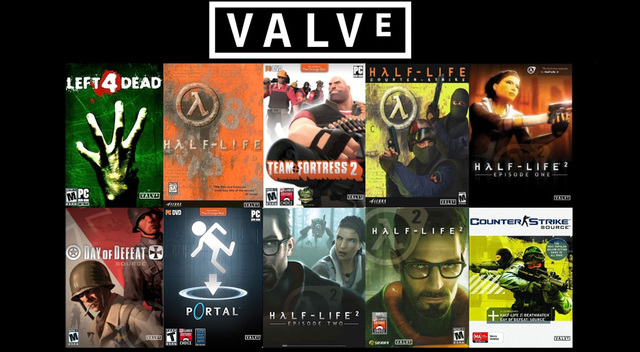

A játékot 2010. márciusában kezdték el fejleszteni és 2012 augusztus 21-én adták ki, Microsoft Windows, OS X, PlayStation 3 és Xbox 360 platformokon egyaránt.
Kezdetben cross-platform többjátékos módot terveztek, ám ezt a későbbiekben elvetették. (Linuxra csak később adták ki, 2014-ben)
- A játék kiadása után tovább fejlesztették a játékot, új pályákkal, fegyverekkel és játékmódokkal. Az első nagyobb frissítés neve "Arms Deal" volt, ezt 2013. augusztus 13-án adták ki. A frissítéssel fegyver skineket hoztak a játékba amiket ládákon keresztül lehetett megszerezni.
- Egy 2014-es frissítés lehetővé tette hogy a játékosok music kit-ek használatával a kör végén zenét rakjanak be.
- 2016-ban 2 pályát is újramodelleztek (Inferno, Nuke). Ugyanebben az évben behozták a Prime matchmakinget, ennek az volt a célja hogy csökkentsék a cheaterek számát.
- 2018-ban a játék ingyenes lett.
- 2019-ben változtattak a karaktermodelleken és behoztak egy battle pass systemet.
- 2020-ban készült el a játék első előzetese. (linket majd berakok)
- 2021 szeptemberében megjelent az Operation Riptide, amely a játékmenetben és a matchmakingben történt változásokkal, új pályákkal és kozmetikai itemekkel bővítette a játékot.
- 2023-ban a Valve bejelentette a Counter Strike 2 érkezését. (Kb. 2023 közepe fele várható)
A Valve által fejlesztett ismertebb játékok
